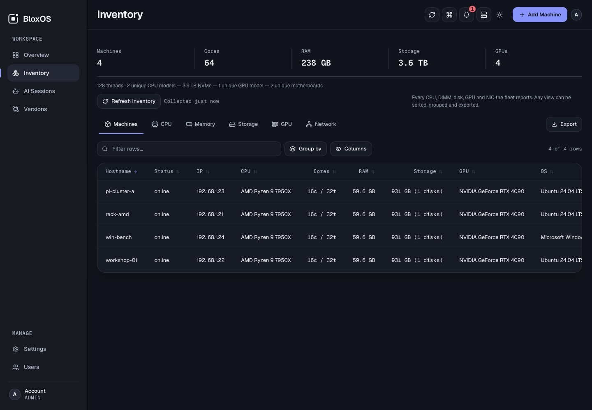
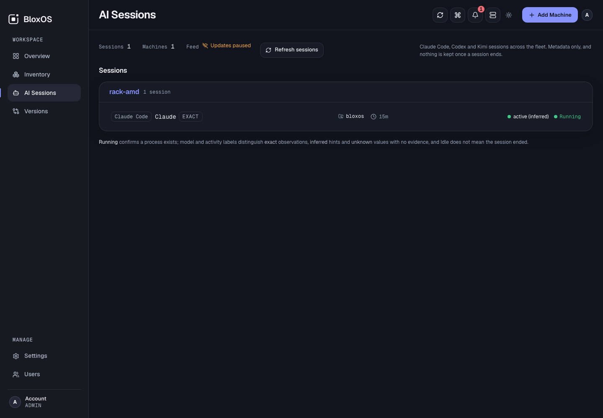

Bring Linux, Windows, and GPU machines into one self-hosted control panel. Monitor health and power, inspect hardware, manage supported services, and open secured Linux terminals without building a monitoring stack.
From the fleet to the machine without losing context.
BloxOS keeps the overview quiet, then puts the detail where you ask for it.
01 / MACHINE DETAIL
Know what a machine is doing now.
Inspect live CPU, memory, disk, GPU, and component-power readings, then move directly into services, containers, metrics, notes, or a re-authenticated Linux terminal.
Live readings with honest unavailable states
24-hour component power history
02 / INVENTORY
See the hardware you actually have.
Search, sort, group, and export the hardware inventory reported by every connected agent across mixed architectures and operating systems.
GPU-aware fleet inventory
Searchable, sortable, groupable, exportable

03 / AI SESSIONS
See where coding agents are active.
Monitor supported Claude Code, Codex, and Kimi sessions across the fleet using live metadata only.
Never prompts, responses, transcripts, terminal output, or full project paths.

HOW IT WORKS
Agents connect out. Managed machines need no inbound agent port.
The Compose stack packages Caddy, the Go hub, SQLite, and the dashboard; agents remain native services.
01MANAGED MACHINESLinux & Windows agents
Outbound WebSocket
02SELF-HOSTED COREGo hub + SQLite
TLS
03YOUR CONTROL PANELBrowser dashboard
SECURITY
Your fleet stays yours.
Self-hosted and role-based, with signed agent updates and rollback protection. Report vulnerabilities privately rather than through public issues.